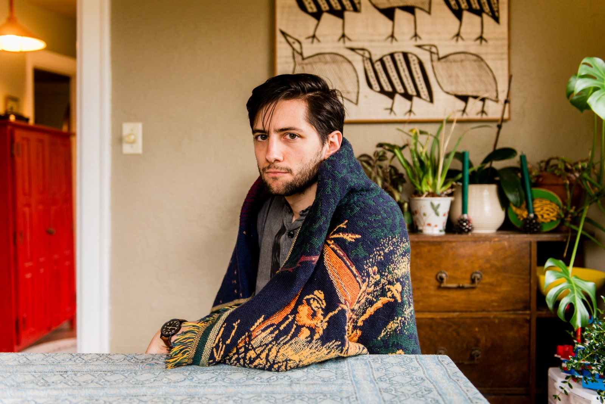

About Stardew Valley
Stardew Valley was initially released on Steam February 26, 2016. A farming simulator developed as a love letter to Nintendo's Harvest Moon franchise, It was developed by just one man, Eric Barone, over the course of four years.
Since it's release in 2016, the game has sold 10 million copies.
